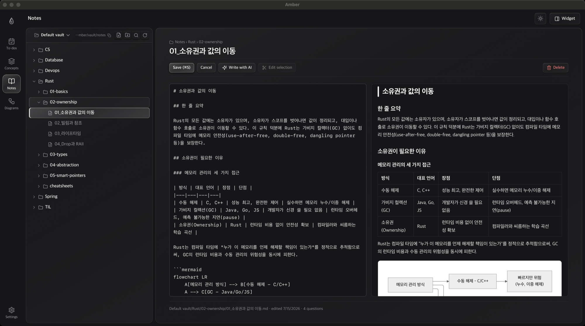

Notes and AI
Real markdown files. AI you review as a diff.
Live preview and a scroll-spy outline. AI edits scoped to a sentence, a section or the whole note always arrive as a reviewable diff, and whole-note drafts write in the background while you do something else.
